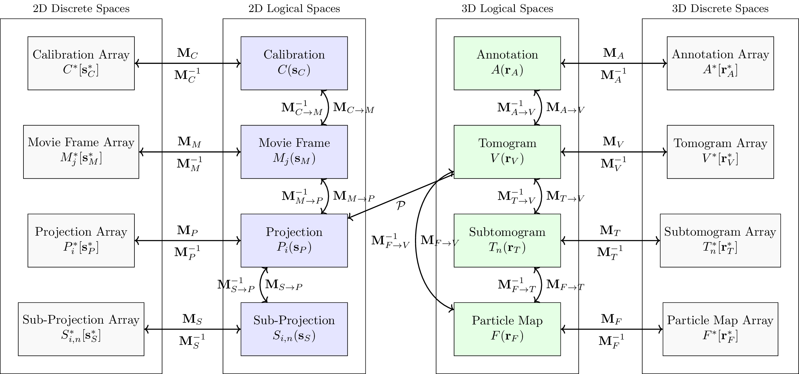

CryoET Coordinate Systems and Transformations Specification
Table of Contents
- Geometry
- Basic concepts
- Basic Notation
- Right-handed Coordinate System
- Transformation Matrices
- 3D Homogeneous Coordinates
-
Image/Volume Grids, Image/Volume Functions and their Coordinate Spaces
- 2D Images
- Named 2D Transformations
- Segmentation Annotations
- Set of Points Annotations
Geometry
Basic concepts
- Logical Space: Continuous space in physical units of Angstroms (Å).
- Discrete Space: Discrete array space with integer coordinates.
We explicitly define the discrete space to remove any ambiguity about the location of the origin and the direction of the axes of the discrete image, which has caused errors in the past.
Basic Notation
Points and Vectors
- Discrete 2D coordinates are denoted as \(\mathbf{s^*} = (s^*_x, s^*_y)^T\) where \(s^*_x, s^*_y \in \mathbb{Z}\)
- Discrete 3D coordinates are denoted as \(\mathbf{r^*} = (r^*_x, r^*_y, r^*_z)^T\) where \(r^*_x, r^*_y, r^*_z \in \mathbb{Z}\)
- 2D vectors are denoted as (lower case, bold face) \(\mathbf{s} = (s_x, s_y)^T\) where \(s_x, s_y \in \mathbb{R}\)
- 3D vectors are denoted as (lower case, bold face) \(\mathbf{r} = (r_x, r_y, r_z)^T\) where \(r_x, r_y, r_z \in \mathbb{R}\)
Image/Volume Grids and Functions
- Discrete 2D image arrays are denoted as (capital, plain) \(\(G^*[\mathbf{s}^*]: \mathbb{Z}^2 \rightarrow \mathbb{R}\)\)
where \(\mathbf{N}_G = (n_x, n_y)\) is the size of the image in pixels. \(n_x\) is the width and \(n_y\) is the height of the image.
-
Continuous 2D image functions are denoted as (capital, plain) \(\(G(\mathbf{s}): \mathbb{R}^2 \rightarrow \mathbb{R}\)\)
-
Discrete 3D volume arrays are denoted as (capital, plain) \(\(V^*[\mathbf{r}^*]: \mathbb{Z}^3 \rightarrow \mathbb{R}\)\)
where \(\mathbf{N}_V = (n_x, n_y, n_z)\) is the size of the volume in pixels. \(n_x\) is the width, \(n_y\) is the height and \(n_z\) is the depth of the volume.
- Continuous 3D volume functions are denoted as (capital, plain) \(\(V(\mathbf{r}): \mathbb{R}^3 \rightarrow \mathbb{R}\)\)
Matrices
- Transformation matrices are denoted as (capital, bold face) \(\mathbf{M}\)
- Homogeneous transformation matrices are denoted as (capital, bold face with tilde) \(\tilde{\mathbf{M}}\)
Right-handed Coordinate System
The standard coordinate system for cryoET is a right-handed Cartesian coordinate system. The defining characteristic of a right-handed coordinate system is the following set of relationships between the vectors that constitute the coordinate system:
Where \(\times\) denotes the cross product and \(\mathbf{x}, \mathbf{y}, \mathbf{z}\) are the unit basis vectors.
The right-handed system is defined such that: - Electrons travel from negative \(z\) to positive \(z\) (aligned with microscope column) - \(y\) points towards the microscopist - \(x\) points to the microscopist's right
All points, vectors and transformations are defined with respect to the right-handed coordinate system.
Transformation Matrices
Transformation matrices are used to represent geometrical transformations between coordinate spaces. For a transformation from space A to space B:
Where: - \(\mathbf{s}_A\) is the coordinate in space A - \(\mathbf{s}_B\) is the coordinate in space B - \(\mathbf{M}_{A \rightarrow B}\) is the transformation matrix from space A to space B
3D Rotation Matrices
-
Right-handed 3D rotation about the x-axis by angle \(\alpha\): $$ R_x(\alpha) = \begin{pmatrix} 1 & 0 & 0 \ 0 & \cos\alpha & \sin\alpha \ 0 & -\sin\alpha & \cos\alpha \end{pmatrix} $$
-
Right-handed 3D rotation about the y-axis by angle \(\alpha\): $$ R_y(\alpha) = \begin{pmatrix} \cos\alpha & 0 & -\sin\alpha \ 0 & 1 & 0 \ \sin\alpha & 0 & \cos\alpha \end{pmatrix} $$
-
Right-handed 3D rotation about the z-axis by angle \(\alpha\): $$ R_z(\alpha) = \begin{pmatrix} \cos\alpha & \sin\alpha & 0 \ -\sin\alpha & \cos\alpha & 0 \ 0 & 0 & 1 \end{pmatrix} $$
3D Scaling Matrices
- 3D scaling matrix with scaling factors \(s_x, s_y, s_z\):
3D Reflection Matrices
- 3D reflection about the x-y plane:
- 3D reflection about the y-z plane:
- 3D reflection about the x-z plane:
3D Homogeneous Coordinates
Matrix operations on homogeneous coordinates are employed to represent geometrical transformations:
Where: - \(\tilde{r} \in \mathbb{R}^3 \times \{1\}\) denotes the homogeneous coordinate of the point undergoing transformation - \(\tilde{r}_F = (x, y, z, 1) \in \mathbb{R}^3 \times \{1\}\) represents its transformed counterpart in homogeneous coordinates - \(\tilde{\mathbf{F}}\) is a 4×4 invertible matrix of real numbers, structured as:
Where: - \(\mathbf{R}\) is a 3×3 rotation matrix - \(\mathbf{t} = (t_x, t_y, t_z)^T\) is a translation vector
Scalar Indeces
- \(i \in \mathbb{Z}\) - The tilt index
- \(j \in \mathbb{Z}\) - The frame index
- \(n \in \mathbb{Z}\) - The sub-tomogram or sub-tiltstack index
Image/Volume Grids, Image/Volume Functions and their Coordinate Spaces
Image Functions in cryoET processing are defined in terms of their discrete and continuous representations.
2D Images
Discrete Image Arrays to Continuous Image Functions
For a 2D image C:
Where: - \(s^*_C\) is the discrete coordinate in the image space - \(s_C\) is the continuous coordinate in the image space - \(C^*[\cdot]\) is the discrete image array in discrete space - \(C(\cdot)\) is the continuous image function in logical space - \(\mathbf{M}_C\) is the transformation matrix from the discrete space to the continuous image or volume space
Matrix \(\mathbf{M}_C\) encodes the translation and scaling operations that map the discrete image space to the continuous image space in that order, and is thus composed of a translation matrix \(\mathbf{T}_C(t_x, t_y)\) and a scaling matrix \(\mathbf{S}_C(s_x, s_y)\):
By default, the origin of the discrete image space is assumed to be at \(\lfloor \frac{\mathbf{N}_C}{2} \rfloor\):
Named 2D Image Arrays and Functions
| Entity | Array/Function | Discrete/Continuous Coords | D->C Transform |
|---|---|---|---|
| Calibration Images | \(C^*[\cdot], C(\cdot)\) | \(\mathbf{s}^*_C \in \mathbb{Z}^2, \mathbf{s}_C \in \mathbb{R}^2\) | \(M_g\) |
| Movie Frame | \(M^*_j[\cdot], M_j(\cdot)\) | \(\mathbf{s}^*_M \in \mathbb{Z}^2, \mathbf{s}_M \in \mathbb{R}^2\) | \(M_M\) |
| Projection | \(P^*_i[\cdot], P_i(\cdot)\) | \(\mathbf{s}^*_P \in \mathbb{Z}^2, \mathbf{s}_P \in \mathbb{R}^2\) | \(M_P\) |
| Sub-Projection | \(S^*_{i,n}[\cdot], S_{i,n}(\cdot)\) | \(\mathbf{s}^*_S \in \mathbb{Z}^2, \mathbf{s}_S \in \mathbb{R}^2\) | \(M_S\) |
3D Images
Discrete Image Arrays to Continuous Image Functions
For a 3D volume V:
Where: - \(\mathbf{r}^*_V\) is the discrete coordinate in the 3D image space - \(\mathbf{r}_V\) is the continuous coordinate in the 3D image space - \(V^*[\cdot]\) is the discrete volume array in discrete space - \(V(\cdot)\) is the continuous volume function in logical space - \(\mathbf{M}_V\) is the transformation matrix from the discrete space to the continuous image or volume space
Matrix \(\mathbf{M}_V\) encodes the translation and scaling operations that map the discrete volume space to the continuous volume space in that order, and is thus composed of a translation matrix \(\mathbf{T}_V(t_x, t_y, t_z)\) and a scaling matrix \(\mathbf{S}_V(s_x, s_y, s_z)\):
By default, the origin of the discrete volume space is assumed to be at \(\lfloor \frac{\mathbf{N}_V}{2} \rfloor\):
Named 3D Image Arrays and Functions
| Entity | Signal/Function | Discrete/Continuous Coords | D->C Transform |
|---|---|---|---|
| Annotation | \(A^*[\cdot], A(\cdot)\) | \(\mathbf{r}^*_A \in \mathbb{Z}^3, \mathbf{r}_A \in \mathbb{R}^3\) | \(M_A\) |
| Tomogram | \(V^*[\cdot], V(\cdot)\) | \(\mathbf{r}^*_V \in \mathbb{Z}^3, \mathbf{r}_V \in \mathbb{R}^3\) | \(M_V\) |
| Subtomogram | \(T^*_n[\cdot], T_n(\cdot)\) | \(\mathbf{r}^*_T \in \mathbb{Z}^3, \mathbf{r}_T \in \mathbb{R}^3\) | \(M_T\) |
| Particle Reconstruction | \(F^*[\cdot], F(\cdot)\) | \(\mathbf{r}^*_F \in \mathbb{Z}^3, \mathbf{r}_F \in \mathbb{R}^3\) | \(M_F\) |
Coordinate Transformations
Transformations between coordinate spaces are defined as:
\(\mathbf{s}_m = M_{c \rightarrow m} \mathbf{s}_c\)
Where \(M_{c \rightarrow m}\) represents the transformation matrix from space c to space m.
Named 2D Transformations
Useful transformations between 2D image spaces are defined as:
| Transformation | Description | Matrix |
|---|---|---|
| Calibration to Movie Frame | Transform from calibration image to movie frame | \(M_{C \rightarrow M}\) |
| Movie Frame to Projection | Transform from movie frame to projection | \(M_{M \rightarrow P}\) |
| Sub-Projection to Projection | Transform from sub-projection to projection | \(M_{S \rightarrow P}\) |
They MUST only be composed of the following transformations:
| Transformation | Composition | Note |
|---|---|---|
| Calibration to Movie Frame | \(\mathbf{R}^{2D}({0, 90, 180 270}), \mathbf{F}^{2D}_x\) | 90 deg rotations / flip |
| Movie Frame to Projection | \(\mathbf{T}\) | translation |
| Sub-Projection to Projection | \(\mathbf{T}\) | translation |
Named 3D Transformations
| Transformation | Description | Matrix |
|---|---|---|
| Annotation to Tomogram | Transform from segmentation to tomogram | \(M_{A \rightarrow V}\) |
| Annotation Array to Tomogram Array | Transform from segmentation array to tomogram array | \(M_{A^* \rightarrow V^*}\) |
| Subtomogram to Tomogram | Transform from subtomogram to tomogram | \(M_{T \rightarrow V}\) |
| Particle Reconstruction to Tomogram | Transform from particle reconstruction to tomogram | \(M_{F \rightarrow V}\) |
| Particle Reconstruction to Subtomogram | Transform from particle reconstruction to subtomogram | \(M_{F \rightarrow T}\) |
They MUST only be composed of the following transformations:
| Transformation | Composition | Note |
|---|---|---|
| Annotation to Tomogram | \(\mathbf{S}, \mathbf{T}\) | scale, translation |
| Subtomogram to Tomogram | \(\mathbf{R}, \mathbf{T}\) | rotations+translation |
| Particle Reconstruction to Tomogram | \(\mathbf{R}, \mathbf{T}\) | rotations+translation |
| Particle Reconstruction to Subtomogram | \(\mathbf{R}, \mathbf{T}\) | rotations+translation (prior), rotations+translation |
Tomographic Alignment
Tomographic alignment shall be defined by a single transformation matrix \(\tilde{\mathbf{M}}_{V \rightarrow P, i}\) per tilt that aligns tomogram coordinates to the projection prior to projection.
An alignment matrix shall be reported for each tilt included in the reconstruction of a particular tomogram.
Subtomogram Alignment
Subtomogram alignment shall be defined by a single transformation matrix \(\tilde{\mathbf{M}}_{F \rightarrow V, n}\) per subtomogram or sub-tiltstack that aligns particle reconstruction coordinates to its predicted locatiion in the tomogram.
An alignment matrix shall be reported for each subtomogram or sub-tiltstack in a particular particle set.
Overview of Coordinate Systems and Transformations

Annotations
We define 3 types of basic annotations: - Segmentation: An image array of numeric labels (see above) - Set of Points: A set of 2D or 3D points with associated metadata - TriMesh: A set of 2D or 3D points and connectivity table to form a triangular mesh
Segmentation Annotations
Segmentation annotations are defined as a 2D or 3D image array of numeric labels. Their spatial relationship to the tomogram is defined as above. As a special case, it is allowed to define the segmentation array in the same space as the tomogram, in which case the transformation matrix \(M_{A \rightarrow V}\) is the identity matrix.
Set of Points Annotations
A set of points is defined as a list of 2D or 3D coordinates with associated metadata. The coordinates are defined in the same space as the tomogram, or tomogram array, and the transformation matrix \(M_{A \rightarrow V}\) is the identity matrix.